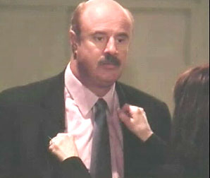
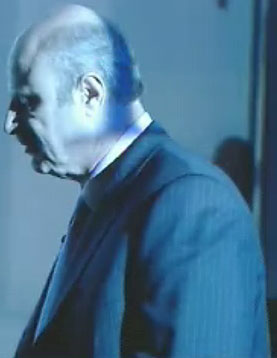
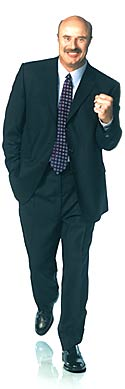
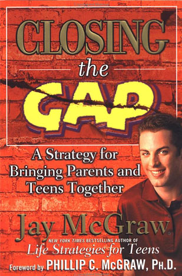
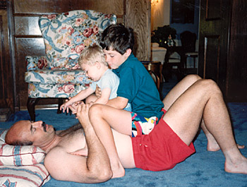
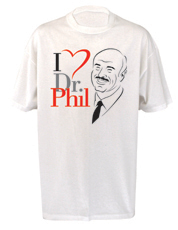
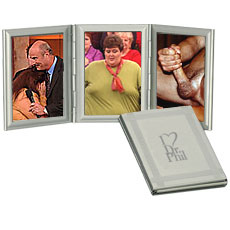
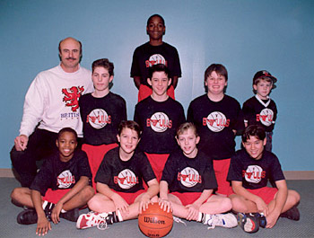

|
Dr. PhilIn 1996, when Oprah Winfrey was being sued by Texas cattle ranchers who claimed
she'd defamed the entire beef industry during an hour-long broadcast about Mad
Cow disease, her credibility and career were at stake -- not to mention $12
million in damages. Oprah's version of the truth wouldn't be worth half a tubesteak
unless it was communicated to the judge and jury effectively. After five weeks of testimony, Winfrey walked out of the courtroom with her dignity more or less intact, and the DNA of Madame Oprah and Dr. Phil were inextricably linked for life. Their good cop / bad cop talk show routine kicked off in style: Dr. Phil was rewarded with appearances as a regular guest on her daytime program. His new title? Relationship and Life Strategy Expert. After three bestselling books, he secured his own Oprah-produced platform. The Dr. Phil show debuted in 97 percent of U.S. television markets, and generally airs directly before or after - but never against - Oprah. Floundering TV stations like the newly independent KRON-4 (pronounced "kron-fu") in the San Francisco Bay Area showcase no fewer than ten hours of Dr. Phil during coveted morning and evening primetime slots five days a week. How's that working for them? Just great, as it turns out. Crazy cash spends just like regular cash. Women
just can't help themselves; they love this guy to death. At 6-foot-4 and 235
pounds, Dr. Phil specializes in blunt force wake-up calls which help people
"get real" and change their lives. He's like a cowboy wrapped up inside
a therapist, snuggled and hugged in a dream within a dream, smothered thrice
times over in the syrupy secret sauce of sweet, sensible success. Guests of
Dr. Phil are placed front and center on a wide circular stage, with literally
nowhere to hide. They're wedged tightly in what look to be giraffe-height wooden-backed
baby chairs, legs dangling uncomfortably in the awkward, empty space above an
entire audience of looky-loos, many of whom spend the full hour doing nothing
more than peering up a guest's skirt. "Dr. Phil doesn't like the fact that we actually expose him for being a wacko," Howard Stern says. "He's a car salesman." Critical viewers roll their eyes whenever Dr. Phil quotes from his own personal
library of down-home good ol' boy Texas yokelisms, obscure combinatorics of
sensible nouns and mundane activities. Sometimes it's hard to see your face
without a mirror, for example. Or, People with nothing to hide hide nothing.
Or, Put that on the cover of the Duh Journal. Or even, You're only
lonely if you're not there for you. Each season, Dr. Phil plucks from the wilderness the most fragmented family his staffers can find. Cameras roll as he delivers them en masse toward stability and enlightenment over the course of an entire season. Emotionally vacuous, ice cold mothers married to philandering, gambling-addicted fathers of pregnant, pie-faced fifteen year-old girls are not uncommon on the set. What sets Dr. Phil guests apart from the cousin-fucking backwater bumpkin trailer trash regularly lampooned on Ricki Lake, Springer or Maury Povich is that Phil's guests are qualified, legitimately fucked up normal people. They're not eunuchs or convenient punchlines, but rather middle-to-upper-class American dopes doing their best to live a "perfect" life. Here are people in truly terrible shape, with very little insight about how to be happy, and far fewer ways to excuse their behavior. They're not on medication, they're not mentally ill. Everyone on the Dr. Phil program is lazy, a crybaby, or somewhere in between. "Marilyn is married, with a 12-year-old daughter. Recently she discovered that her husband of 13 years has been cheating on her during most of their marriage. He is so unhappy with her weight of 347 pounds that he's embarrassed to introduce her to his friends and co-workers." "You're going to have to come to grips with that," Dr. Phil tells her. "And if you don't want to do that, then don't do this. There's nowhere to run, nowhere to hide. You're going to get real about fat, or you're going to get real fat." Yes, Dr. Phil's most recent title is Lord of the Fat. But Sally Smith, 374-pound editor of Big Beautiful Woman magazine, and Maryanne Bodolay, 400-pound executive administrator of the National Association to Advance Fat Acceptance are two former guests of Dr. Phil who have come forward to denounce him as a fraud. They'd hoped to change the good doctor's philosophy that being fat is a psychological flaw which can be overcome with willpower alone. Before they appeared on the show, producers sent them on an undercover mission in Las Vegas. A hidden camera followed them around in the hopes that strangers would ridicule them because of their weight. Nobody did, so the crew moved the ladies to Los Angeles and sat them in a restaurant next to two diners known to dislike fat people. Nothing happened there, either -- but when the show aired in November, viewers saw Maryanne and Sally visiting a mall, a fitness center and a buffet restaurant. Hidden-camera footage showed onlookers snickering -- supposedly at the overweight ladies. At different times in the restaurant, one man asked, "Is that fat-free ice cream?" and another told the women, "Leave some for somebody else!" To add insult to injury, producers telephoned the women weeks after the show aired, asking them to make a return appearance because the first show won tremendous ratings. As if one Phil McGraw wasn't enough, out squirts Jay McGraw, Dr. Phil's son -- ready, willing and able to step up and get real about piggybacking on the success of his dad. A student at Southern Methodist University with impish tufts of Giovanni Ribisi facial hair (and a dead ringer for all the freakish members of the Backstreet Boys smashed together), Jay has somehow managed to auteur four books intended for teens, each of which has landed on the New York Times bestseller list. Chief among them is Closing the Gap: A Strategy for Bringing Parents and Teens Together. "Parents, your sons and daughters are in danger!" shrieks Dr. Phil at the start of Jay's book. "If you're a parent, grandparent or teenager, you are infected with a very serious disease. It is not a disease of biological origin, it does not attack the tissues of your body, but it is a disease - an acute social disease which attacks the fiber of your family. The danger is real; it is right now and it spans the physical, mental, emotional and spiritual realms. Teens, whether you think so or not, you are in trouble here, and your parents are confused - or even worse - totally lost about how to help. The disease is one of disconnection, distraction, and fragmentation." And then Jay starts pounding the keyboard, doing his best to fit in with today's young people. "Are you as tired as I am of books constantly telling you the same old Brady Bunch, Beaver Cleaver, goody-two-shoes BS about doing your best to understand your parents, doing your homework, making curfew, getting a haircut, dropping that hemline, and blah blah blah?" Hemlines? Curfews? Goody-two-shoes? Beaver Cleaver? When was the last time any of those words crossed a teen's vocabulary? Talk about a never-ending cycle of disconnection, daddy-o. Why not just bring up Warm Fuzzies and Cold Pricklies? As Oprah plugs Phil, Phil plugs Jay, Jay plugs his books, each book plugs the websites (as a resource for "meaningful discourse") and splashed across all the websites are plugs for Oprah What nobody plugs is that a former patient of Dr. Phil has come forward to
claim he sexually abused her in the early 1980's. She filed charges with the
Texas State Board of Examiners and Psychologists, who reprimanded him in 1989
for "hiring the woman too soon after she was a patient," citing an
inappropriate dual relationship. Dr. Phil took a lie detector test to prove
his innocence - and he passed - but he "can't remember" exactly who
administered the test. So Dr. Phil is a controversial behaviorist among therapists. Big deal. One camp sees him as an emotional hustler who's turned serious psychotherapy into a sideshow, tearing down defenses and offering nothing in return. Others say Phil is doing a service by showcasing dysfunctional couples to the world and chastising them to snap out of it. One side-effect of Oprah giving birth to Dr. Phil was the inevitable onslaught of I LOVE DR. PHIL merchandise and paraphernalia, the least of which can be described as pop philosophy or a self-help references. His web site boasts information "not necessarily created or approved by a certified mental health professional," and content "not created by Dr. Phil or any other certified mental health professional." Are you ludicrously obese, struggling daily with a regiment of diet, exercise and weight loss? Just buy bigger clothes! Navigate your way to the Dr. Phil website; maybe you need an I LOVE DR. PHIL T-shirt, available in sizes Large, Extra Large, Extra Extra Large - and yes, folks - Extra Extra Extra Large. Who says food can't masquerade as love? Or might you be better off with a nickel-plated I LOVE DR. PHIL Accordion Tri-Fold Mini Photo Template Frame? What better way to help your emotionally distant father showcase embarrassing soccer portraits of you at age eleven. Look honey, it's you! In your stupid reversible jersey, chopped up bowl-cut hairdo and gawky, protruding headgear which makes your face look like a roller coaster. Only $15.99, plus shipping and fondling. And hey mom, we can't forget about you. Everyone in our rinky-dink middle America huckleberry farming community knows you like to drive into town pitch-black, fall-down drunk. So here's an I LOVE DR. PHIL silver keychain, packaged in a gift box and suitable for your keys to the tractor, trailer, tractor-trailer, or all of the above. Ten bucks, guaranteed to make today a changing day in your life. Dear Diary, what I wouldn't give for an I LOVE DR. PHIL spiral-bound notebook so I could jot down each and every last one of my own personal observations during Dr. Phil re-runs. And it's only twelve dollars. My goodness, how will I ever fill up eighty sheets of individually lined paper? Have that many original thoughts even occurred to me over the course of my entire life? Who cares! Add to cart! CLICK CLICK CLICK CLICK HONK BONK DUH. Clearly it's come to Dr. Phil's attention that a large portion of his stay-at-home audience are desperate shopaholics who suffer from diarrhea of the spend. Do you have similar problems? Are your children vicious potty-mouths, crippled by painfully narcissistic introspection about their Max Payne 2 acumen? Is your sixth wife haranguing you about wanting a sixth baby? Were you raised in by wolves who made no secret of the fact that they were hoping for a child of the opposite sex? These days, the only way to get a face-to-face meeting with Dr. Phil is to be a guest on the show. Upcoming topics include I Love You But I Can't Stand Your Kids, Is Your Son Becoming A Woman? and Pretending You're A Different Race To Get Ahead. |